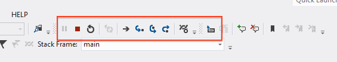

UBC CPSC 259 Lab 1
Contents
Objectives for this lab
- Renew/Obtain your Department of Computer Science account using
getacct - Learn about the lab structure in CPSC 259
- Discuss and understand the consequences of plagiarism
- Learn about Pair Programming
- Learn about Unit Tests and Test-Driven Design
- Familiarize yourself with Microsoft™ Visual Studio Enterprise 2017 by coding and running a simple C program
- Use the debugger in Microsoft™ Visual Studio Enterprise 2017 and demonstrate how to find a code bug
- Review fundamental C concepts from APSC 160 by writing simple functions and programs that use:
- Types
- Functions, and passing parameters to functions
- Arrays
- Flow of Control
- File I/O (Input and Output)
- Typical program file structure
- Use
handinto electronically submit a sample take-home lab assignment - Send an email to your TA using your UBC CS email account
- Begin learning some refinements and some helpful functions from the C Standard Library
- Collect file/user input safely by using fgets and sscanf instead of scanf
2. Pre-lab reading
TO-DO |
The Pre-lab section of the lab summarizes the preparations you need to make prior to each lab, so you are ready to begin when you arrive at the start of your lab session. It is important to be prepared for the lab because you will be working in pairs. You should always read the entire lab prior to your lab session, but often there are other things you will need to do in addition to just reading the description. Look for the TO-DO for the major tasks. |
Welcome!
Welcome to CPSC 259's first lab! This term you will build on the C procedural programming skills you acquired in APSC 160. By the end of the term, you will be familiar with some of the most common data structures and algorithms used by computer scientists. Your first lab contains a great deal of reading (more than any of the others, we promise!) and it is important that you read all of it. So let's begin.
General Lab Format
- Labs begin during the second week of class and take place in ICICS/CS 008. Attendance is mandatory and you will lose marks for being late.
- There will be 5 labs. Each lab takes place over two weeks. We will meet once per week and each meeting is 1 hour and 50 minutes long:
- Each of your labs contains some in-lab deliverables, an in-lab test, and a take-home assignment:
- In-lab deliverables: due before the end of the first lab meeting, and your TAs will mark them as you complete them. During your labs, remember to show your TAs each deliverable as you complete it, so you can avoid a marking bottleneck at the end of the lab.
- In-lab test: will take place during the first hour of the second meeting, and will test your knowledge of material introduced during lecture and in the lab. After the in-lab test, the TAs will remain in the lab for the second hour to answer questions about the take-home assignment, and to mark any in-lab deliverables which you did not have marked during week 1.
- Take-home component: due at 11:59 PM the night before your next lab. e.g., in 2 weeks less a partial day.
Each lab will be described using the following outline:
- Objectives an itemized list
- Pre-lab Reading a summary of what you must do before coming to the lab
- In-lab Exercises completed in pairs and checked by your TAs in the lab
- Take-Home Assignment completed in pairs and submitted through handin
- Deliverables a helpful summary of what you need to hand in, and the marking scheme.
Deliverable |
Look for the Deliverable tag throughout the lab which helps identify what you must submit. |
TO-DO #1: Activate your Computer Science Department account before you attend your first lab
Most students already have a Campus Wide Login (CWL) account. Using this account, you can activate your Department of Computer Science account for the current school year. These are different accounts. You will not be able to do anything in the Department of Computer Science lab if you do not have a valid Department of Computer Science computer account, and it can take 15 minutes to become active.
How to get/renew your Department of Computer Science account:
- You will need a UBC CWL (Campus-Wide Login) userid (also used for Connect). You can get one here.
- Reset/Activate your Department of Computer Science account here (choose 'Run getacct').
- If you do not have access to a computer off-campus, you can do this in any of the Department of Computer Science undergraduate computer labs. Use the Microsoft Windows login window to activate your account. Use getacct as the username, leave the password field empty, and login. You will be directed to the account activation page, where you can reset/activate your CS undergrad account.
- Read about the facilities you can use at the Department of Computer Science.
- Note: Your Department of Computer Science account includes an email address: XXXX@ugrad.cs.ubc.ca, where XXXX = your 4-character CS ID. Your TAs will send your take-home assignment marks to your Department of Computer Science email address. Later in this lab you will need to send your TA an email from this address. You can set up your email client using these instructions.
Plagiarism
The Department of Computer Science has a strict plagiarism policy, and we will enforce it. Submitting work which is not your own is plagiarism. Sharing your work with others is plagiarism. Copying code (even snippets!) written by someone else (including a tutor) is plagiarism.
Penalties for plagiarism include: a failing grade or mark of zero in the course, examination, or assignment in which the academic misconduct occurred; suspension from the University for a specified period of time, or indefinitely; a permanent Reprimand placed on your student record.
Make sure you read our department's plagiarism policies. You must also read The List Of Things I Never Want To Hear Again, prepared by Dr. Tamara Munzner of the CS department and shared with her permission. Your TAs will also review the department plagiarism policy during your first lab session.
Pair Programming
We will employ Pair Programming in our labs. Pair Programming is a software technique in which two programmers work together at one workstation. One of you will type (the driver), and the other (the navigator) will do quality control, help point out errors (e.g., misspelled variable names, undeclared variables, out of bounds conditions), get a better understanding of how the code fits together, etc. Every 15-20 minutes, you will switch roles--the driver will become the navigator, and the navigator will become the driver. You may open the course powerpoint slides or lab document on another computer, but you may only use Microsoft™ Visual Studio Enterprise 2017 (more about Visual Studio below) on one computer, and only the driver may type.
You will be working with a new partner for each lab. During the first lab, we will let you select your own partner. At the beginning of each subsequent lab, you will choose a new partner. There is a great deal to complete in each lab, so you must self-organize quickly and efficiently. You may not work alone, and you may not work with someone more than once. You will work with your partner in the lab, and you will also collaborate with your partner after the lab session to complete the take-home programming assignment. Note: you will complete the in-lab test during the second meeting individually.
The department plagiarism policy requires that pairs work separately. Do not share your work with other pairs of students for any reason at all, because that is academic misconduct.
Programmers who work in pairs tend to work faster, learn from each other, and write shorter programs with better designs. Also, industry programmers must frequently work with other programmers whom they don't know well. Programming in pairs with a new partner each week gives you a taste of what programming can be like in the real world. This will take a few sessions to get used to, but we think that by the end of the term you'll appreciate how Pair Programming can help you design and implement better solutions more quickly. You may find it challenging to coordinate schedules to work together on the take-home assignments, but you are required to work together on all portions of your lab.
We want you to think about your partnerships during the term. Occasionally, during your lab we're going to ask you about your experiences working in pairs. At the end of the term, we will also ask you to reflect on your Pair Programming experience and tell us how you think it helped/hindered you with your work. For now, several times during each lab we'd like you to step back and ensure the partnership is working well.
Good partnerships need to be actively managed. As soon as you sit down, exchange contact information with your partner (phone and/or email), and then turn off your phone and put it away. Give your partner 100% of your attention (and if we see you checking your phone, we'll deduct some marks). Make sure you rotate the driver's seat every 15-20 minutes. Don't let one partner monopolize the keyboard or the design. Be patient and respectful with each other, and don't be shy about asking questions. Divide your work evenly. If both of you are stumped, and you can't find any help in the text, the course lecture slides, or the class forums, ask a TA for help. In fact, it's a good idea to talk to your TA if you and your partner need help getting started or distributing your workload, or anytime you feel like your partnership is becoming too one-sided or needs some inspiration. Remember: it is not okay for one partner to do the take-home lab at home by himself or herself. You must write the code together.
Your TAs will watch you and your partner during the lab session to make sure you: a) switch roles every 15-20 minutes, and b) develop your solutions using Visual Studio Enterprise 2017 on one computer. Marks will be assigned for correctly switching roles during the lab session. During the first lab, the TAs will remind everyone to rotate. During subsequent labs we will not remind you to rotate, and we will not tell you in advance when we are marking your team, so you will need to set 15-20 minute reminders for yourself.
If you want to read more about Pair Programming and other agile software development techniques, please visit the ICICS/Computer Science Reading Room (room 262 of the ICICS/CS building). The Reading Room Coordinator will help you satisfy your curiosity.
Your toolkit: Microsoft™ Visual Studio Enterprise 2017
You will use Microsoft™ Visual Studio Enterprise 2017, an Integrated Development Environment (IDE) by Microsoft™, to develop programs in the C language.
Microsoft™ Visual Studio Enterprise 2017 is an industry-standard IDE. It allows you to edit, compile, run and debug your C programs. It will also allow you to work with other programming languages such as C++ (a superset of C), C#, and Visual Basic, but we will not be exploring these options in this course. We will be using the Visual Studio Enterprise 2017 IDE in CPSC 259 to facilitate software development and the debugging process. It is installed for your use on machines in the Department of Computer Science labs.
There are other IDEs like Xcode and Eclipse, and command line compilers like gcc (the gnu c compiler) which we encourage you to explore (ask a TA for help!), but your in-lab work must be done on the lab computers (Visual Studio Enterprise 2017) and your take-home submissions will be compiled and graded using Visual Studio Enterprise 2017. You and your partner may work together in the lab outside of regularly scheduled hours. If you wish to be able to develop programs using your own computer or laptop at home (and we encourage this), you will need to install Visual Studio Enterprise 2017. If you own a Mac, we recommend you download free virtualization software like Oracle's VirtualBox, and install Visual Studio Enterprise 2017 on a virtual Windows 7 drive (email the lab coordinator if you get stuck). You must make sure you successfully compile your source code using Visual Studio Enterprise 2017 in the lab before submitting your work.
TO-DO #2: Download and install a free copy of Microsoft™ Visual Studio Enterprise 2017 (or most recent version)
Do not do this on the lab computers. Visual Studio is already installed in the Computer Science Department labs, and you may use the most recent version available.
How do I get a copy of Visual Studio Enterprise 2017?
Visual Studio Enterprise 2017 is available to you as a student in an Applied Science Program at UBC through Imagine™. Imagine™ (formerly known as MSDNAA/DreamSpark™) is a software subscription program for UBC Engineering faculty and students:
http://www.engineering.ubc.ca/current_students/student_resources/msdnaa
On this page there is a link to the e-academy site and instructions below the link for how to register. Follow the link to the e-academy site and once you have registered, add "Microsoft Visual Studio Enterprise 2017 32/64-bit (Multilanguage)" to your download cart. The file is several GB in size, so allow plenty of time to download and install it.
3. In-lab Exercises
We will begin by creating a simple project in Visual Studio 2017 and compiling a short program. We will use the debugger to find and fix an error, and then you will demonstrate to the TA that you can "debug" a classic programming bug. Finally, you will learn about Unit Tests and Test-Driven Design, and write and test a collection of functions that review key APSC 160 concepts you will need for this course.
In-lab exercises are pair exercises. You must complete these with a partner but you can ask a TA for help. Remember to take turns typing. Switch roles every 15-20 minutes. This is a good idea because you will answer questions about your lab individually. Being able to explain "in plain English" how a section of code works, or how to debug a problem, are first steps to writing good code.
REMINDER: In the computer science labs, you must use drive Z: to store any files and directories that you create, including projects for Visual Studio. Make sure you save your projects on drive Z:.
TO-DO #3: The sieve of Eratosthenes
- Before you do anything else, choose a partner and exchange contact information. Get his or her first and last name, email address (one that they use at least once or twice a day), and cell number. You will need to coordinate schedules in order to meet for the take-home component. It would be a good idea to set aside at least 6 or so hours for this, in four or more 1.5 hour 'chunks'. Start early, and don't wait until the night before it's due.
- Start Visual Studio Enterprise 2017 by double clicking its icon on the desktop or, if it is not there, by choosing Start -> All Programs -> Microsoft Visual Studio 2017 -> Visual Studio 2017. If you are asked to choose your default environment settings, select Visual C++ Development Settings.
- Create a new project. Choose Menu: File -> New/Project. We will learn how to create a project from existing code later in the lab.
- When the New Project dialog box opens, select Visual C++ from the left sidebar (Installed Templates) and then Empty Project from the middle panel.
- Choose a short, descriptive name for the project, like CPSC259_Lab1_Walkthrough.
- Make sure that Create directory for solution option is checked (in the lower right corner of the dialog box). You don't need source control for now, so leave that unchecked.
- Make a mental note of the project folder's location. This may be useful later on.
- The dialog box should look like this [NOTE: You can always click a screenshot like this to see a larger version]:
- Click OK. Ignore any warnings about the project location and the CLR runtime.
- Your Visual Studio Enterprise 2017 desktop should look something like this. The left panel is the Solution Explorer. If it is not, you can change it to the Solution Explorer by choosing Menu: View -> Solution Explorer, or Control + Alt + L. Visual Studio organizes your files into folders. We will focus on the Header Files and Source Files folders.
- Right-click the Source Files folder and select Add -> New Item from the pop-up menu.
- When the New Item dialog box opens, make sure Visual C++ is selected in the left panel and then choose C++ file (.cpp) from the options in the right-hand panel. C++ is a superset of C, and we use the same compiler.
- Enter main.c for your source file name. Please be sure to use the ".c" suffix, which denotes a C source file, and not ".cpp", which denotes a C++ file.
- Leave the specified location unchanged and click Add
. - An empty source file will be added to your project and the file will be open for editing.
- Now copy the contents of this text file to your
main.csource file. Substitute your own names, student numbers, etc. at the top of the code. Save your lab work regularly by choosing the Save option from the File menu or by pressing Ctrl + S. Also remember that the C programming language is case-sensitive which means that name and Name are not considered to be the same. - Comments are green. Everything else is your code. Start reading the comments. We've put some reminders in them to help you get back on track.
- Line numbers are not on by default. You should turn them on. From the menu, choose Tools -> Options -> Text Editor -> All Languages -> General -> Display and make sure Line Numbers is checked. Press OK.
- Note the wavy red line that appears under the first printf command in your code. Visual Studio 2017's error markers subtly mark text that your language parser determines is incorrect with a squiggly or wavy red line. This indicator helps programmers by highlighting incorrect code. In this case, if you mouse over the error marker, a pop-up window tells us we are trying to use an undefined function (Error: identifier "printf" is undefined). We must define a function before we can use it, either by defining its prototype or by including a header file that defines its prototype. The printf function has already been written for us and is included in a header file called
stdio.hthat is part of the C Standard Library. Place your cursor under the comment that says/* Preprocessor directives */and add:
#include <stdio.h>
The error marker disappears. - It's time to build or compile our project. We want to compile and execute it. Click Debug -> Start Without Debugging.
- A terminal/console window should open and you should see our program's output printed to the screen.
{kind=link}
{kind=link}
{kind=link}
{kind=link}
Pretty easy, right? Just like riding a bike. Let's try using the debugger now.
TO-DO #4: Demonstrate how to debug a program
- Did you notice the strange value produced by our program? Execute the program again and look at the value stored in cell number 100 of our array. How can that be? Minus what?! How long is the array? We initialized the array to 0s, and the sieve of Eratosthenes changed these to 1s in cells whose indices were prime numbers. So what's going on? Let's use the debugger to find out.
- What we need to do is set a breakpoint where we would like the debugger to pause when the program reaches it. To add a breakpoint, simply click on the grey column just left of the code line number you'd like to pause at, and a red dot will appear next to the line. This is called setting a breakpoint, and is shown in the next screenshot. Set a breakpoint of your own in the same spot:
- Now we can run start the debugger by pressing F5 or using the the Menu: Debug -> Start Debugging. Your program will pause when it reaches the breakpoint, and a yellow arrow will appear on the line that is about to be executed. The line of code we have chosen for the breakpoint is now the next line of code to be executed. That is, everything up to that line has executed, but not that line:
- While your program is paused, you can examine many different things about the current state of your program. Choose the Locals tab. It's one of the tabs in the bottom left window that popped open in the Visual Studio workspace.
- The Locals tab (pictured below) will show you the value of the variables local to the function you are currently paused inside. Since we are inside our main function, we can see the value of the integers
iandj, and the address of the arraynumbers. What happens if you expand the plus-sign besidenumbers? - Do you see what the problem is now? When we count array indices, do we start with 0? The value of
jis 100, but array indices begin at 0, and thenumbersarray (length 100) has indices 0 to 99. There is no such thing asnumbers[100]. It only goes up tonumbers[99]. Press F5 to continue and finish the program. Sometimes you may want to break execution instead of continuing, in which case press Shift + F5. - There are two ways to remove the breakpoint. You can remove the breakpoint by left clicking the red circle with your mouse, or...
- ...another interesting view is the Breakpoints view, which will show you a list of breakpoints you have set in the code. It's one of the tabs in the bottom right window that popped open in the Visual Studio workspace. If you choose the Breakpoints view and mouse over the buttons in the window, Visual Studio will provide a brief description of what each button does. There's a button with a red X on it that you can use to delete the breakpoint we set. Try it.
- Now let's take a look at some of the controls available to you while you're in the middle of debugging. The most important buttons should be available on one of your toolbars near the top and will look like the following:

Hovering over each of the icons will describe the name of the control. Here's a brief description of what each does:- Stop Debugging: stops the execution of the program completely
- Restart: restarts the program from the beginning in debugging mode
- Show Next Statement: refocuses the screen on the line the program is paused at (this is useful if you've been viewing other areas of the code and want to jump back to the line in question)
- Step Into: if the current line contains a function call, this control will tell the debugger to enter into that function (we'll examine this more closely in a bit)
- Step Over: tells the debugger to advance (execute) one statement in the current function
- Step Out: tells the debugger to execute all statements within the current function, but halt once the function returns
- The bug we just diagnosed was a form of "buffer overrun". In this case, we incorrectly tried to read a value from our array using an index which took us past the end of the array--we "overran the buffer". There are two other classic errors that programmers make: "pointer errors" (you'll learn about pointers in a few weeks), and "divide by zero" errors. Let's look at a "divide by zero" error.
- If you haven't stopped debugging yet, stop now. You can stop by pressing the red square in the Debugging controls.
- In your program, immediately after the end of the array initialization loop, add a line of code that sets
jto be zero. Add another line of code that prints the result of dividingMAXbyj. Compile and execute the program. What happens? - If you press Continue, the program tries to execute the code causing the error, but it can't. Dividing by zero causes an unhandled exception, or error, to take place. We can't continue. Let's try anyway. Press Continue. Nothing happens because we can't divide by zero. We have to Break (abort) execution of the program. Choose Break.
- Even though we broke execution, the Debugger is still executing. You can tell by choosing Debug from the main menu. Notice that the options Continue (F5) and Stop Debugging (Shift + F5) are available. If you choose continue, the error window pops up again, so choose Stop Debugging. Then go ahead and remove the two lines of code that we used to generate the divide by zero error. We just wanted to demonstrate a divide by zero error to you with it, and we don't need it anymore.
- When you've got the hang of it, demonstrate the debugger to one of the TAs. Show your TA how you debugged the first error.
- When you've finished your demonstration, close the current project. Choose Menu: File -> Close Solution.
{kind=link}
{kind=link}
{kind=link}
{kind=link}
TO-DO #5: Write some simple functions (using unit tests)
- Let's open a new project. This time you'll use a project that we've already started. It contains some partially implemented functions, and some unit tests. You'll complete the functions, and use the unit tests to help determine if your implementations are correct.
- Download the framework we have created for you here: CPSC259_2017W1_Lab1_InLabExercises.zip. If you are using a lab computer make sure you download it to the Z: drive. Unzip the folder. In Visual Studio, choose Menu: File -> Open -> Project/Solution. Navigate to the folder you just unzipped, and choose the CPSC259_2017W1_Lab1_InLabExercises.sln file. Choose Open. The partially implemented project will open. Ignore any security warnings.
- This solution contains two projects. The first project is called CPSC259_2017W1_Lab1_InLabExercises, and the second is called CPSC259_2017W1_Lab1_InLabUnitTests. Expand the Header Files and Source Files folders in each of the projects. You should see a total of 3 different files in the projects.
- You will complete the functions in the lab1_in-lab_exercises.c source file. Go ahead and look at that file now. There are several functions in this file. Some look like they are fully implemented. Some look like they are only partially implemented.
- You can test the correctness of your implementation by running the unit tests. But first, we need to open the Test Explorer. You can do this by choosing Menu: Test -> Windows -> Test Explorer.
- This opens the Test Explorer window in the right pane. The Test Explorer window gives us a visual interface to the unit tests we wrote for you in the unittest1.cpp source file. Some of you might wonder why we use the .cpp suffix for the unit test file. The unit tests are written in C++, a (rough) superset of C. Visual Studio 2017's unit testing framework requires that unit tests be written in C++. Fortunately for you, the code in the actual tests is good old C, and it's just the fancy test wrapping that is written in C++. This means you can write your own unit tests too.
- Go ahead and execute the unit tests. In the Test Explorer, choose Run All. It takes a few moments for the unit test framework to load for the first time, so be patient.
- The Test Explorer is done when the bar stops spinning and turns either solid red or solid green. Solid green means all the unit tests passed. Solid red means one or more unit tests failed. Below the bar, you should see a list of the tests, some passed and some failed. It should look a little something like this:
- Your goal is to implement the functions in lab1_inlab_exercises.c, and run and pass all of the unit tests. The best way to do this is sequentially. Here's a good algorithm for proceeding with this lab:
- Execute the unit tests.
- While there are unit tests that fail
- Pick the first unit test that failed
- Read the unit test code to determine which function it is testing, and what is being tested.
- Examine the function being tested and make changes (refactor) the code (DO NOT CHANGE THE UNIT TEST CODE).
- Re-build the project.
- Re-run the unit tests.
- When your code passes all the tests, and you see a solid green bar across the top of the Test Explorer, show your work to a TA. Remember not to change the unit test code. You should only be editing the code in the lab1_inlab_exercises.c file.
{kind=link}
{kind=link}
{kind=link}
{kind=link}
TO-DO #6: Submit your work using handin
We won't normally ask you to submit the work you complete in the labs. Showing it to the TAs for marks will be enough in future labs. Today we're going to ask you to submit your work using handin, which is what you will use to submit your take-home assignments. Once you do this, you will know how to submit your take-home labs. Each of you needs to do this individually.
- Open Windows Explorer and navigate to the project you are working on. It should be in a folder called CPSC259_2017W1_Lab1_InLabExercises. Remember that this should be somewhere on drive: Z. This contains another folder with the same name, CPSC259_2017W1_Lab1_InLabExercises, as well as folders called Debug, ipch, etc., which we will ignore for now. Inside the second folder with the same name you will find your source code. Choose the source code and header files (and ONLY the source code and header files) by holding down Control and left-clicking the .c and .h files.
- Once the files have been selected, you can right-click any of them to open the dropdown menu. Choose Send to -> Compressed (zipped) folder. This automatically zips up your source code. Remember, you are only zipping your source code. You will lose marks if you try to submit other files.

- Name the file LastNameFirstName_StudentNumber_CSID.zip, replacing LastName with your last name, FirstName with your first name, StudentNumber with your student number, and (you guessed it) CSID with your 4- or 5-character CS ID. You will have to submit this once with one of your names and student numbers, and again with the other name and student numbers.
- Open Firefox or Chrome and navigate to https://www.cs.ubc.ca/students/undergrad/services/hand-in. Select Run handin.
- You will be asked to login. Your login ID is your 4- or 5-character Department of Computer Science account ID, and the password is the same password you created when you renewed your Department of Computer Science account. The course is cs259, and the assignment is L1X_HandinTest, replacing X with the correct letter for your lab section. Take a look at the options available to you. In particular, if you have already submitted an assignment, and you want to resubmit it, you can check the Overwrite previous box.
- Click on Choose file and navigate to the zip file you just created. Choose it, and submit your work. Once you have submitted your source code, your partner must rename the zip file, log into handin using his/her CS ID, and resubmit your work.
- That's almost it! Make sure your TA confirms the zipped lab material has been received (for both of you!), and then schedule your first meeting to work on the take-home lab. We told you today's lab was a lot of reading, and we meant it. Don't worry--later labs will be shorter (though not necessarily easier).
4. Take-Home Assignment
TO-DO #7: Send your TA an email using your UBC CS email
Your TAs will send your take-home assignment marks to your Department of Computer Science email address. Your Department of Computer Science account includes an email address: XXXX@ugrad.cs.ubc.ca, where XXXX = your 4- or 5-character CS ID. We need to make sure you can send and receive email at this address. Your next task is to send a TA an email using your UBC CS email.
This email must be submitted before the end of the second lab session.
You will need to set up your email client using the instructions found here: https://my.cs.ubc.ca/docs/email-client-set.
The email subject line should look like this: CPSC 259 LabX Email submission, where X is your lab section. Inside the email, please write your full name, your student numbers, and your CS ID.
TO-DO #8: Programming Assignment
The town of Puddlejump on the northern BC coast has been collecting tidal height statistics (in mm) since 1997. The data, contained in 131,072 (aka 2^17) hourly intervals from 1997 to 2012, is in the file puddlejump.txt. You will open the file, copy the contents to an array in memory, and then use the Fourier transformation to determine whether Puddlejump has a predominantly twice-daily or daily tide.
Don't worry about the math--we provide most of it for you. We're "blackboxing" the Fourier transformation code. You don't need to understand it. You do need to understand its interface so you can send the right arguments to it, but its inner workings are blackboxed. You can read it if you want, and in fact you MUST read the comments in the code, but you don't have to understand the logic of the transformation. For those of you who are still curious, we will generate a short Fourier 101 document which will be made available available here: Fourier 101.
- Download the framework we have created for you here. If you are using a lab computer make sure you download it to the Z: drive. Unzip the folder. This is a partially implemented Visual Studio 2017 project and you can open it using the same procedure you followed in step 34. The project includes some helpful unit tests. The code you need to implement is in the file
tide_analyzer.c. Do not change anything else (exception: you are free to generate more unit tests for any additional auxiliary or helper functions you create). - You need to tweak a configuration setting now. In lecture, you're going to learn about pointers and dynamic memory management. Dynamic memory management allocates portions of memory to programs at their request, and frees it for reuse when no longer needed. But we're not going to use dynamic memory management in this lab, which means we're going to use the stack for our arrays, etc.
By default, the Visual Studio Enterprise 2017 compiler limits the size of the runtime stack to 1MB. Since you will be using some very big arrays, you need to increase the size of the stack, or the runtime stack will "overflow". (This might sound technical, but you will learn more about stacks in later in the course, and this will make perfect sense). Here's how to prevent a stack overflow: once you've opened your project, right click the name of the project that contains the source code (note the unit tests) in the Solution Explorer and choose Properties:
- Once you've opened the Properties, choose Configuration Properties -> Linker -> System, and in the empty field beside Stack Reserve Size, enter
4000000(that's 4 million). Click OK, and the stack should be large enough to handle your arrays.
- If you observe any errors that look like this, your stack still isn't large enough. Go ahead and increment the size by another million, and make sure you tell us to do this in your README.txt file.
- Now that the project has been created, you can start implementing your solution. Take some time now to read all of the functions in the framework, including their comments, and the code inside them. Look at the unit tests, and try executing them (remember to open the Test Explorer first). We've provided the Fourier transformation code for you (don't panic!). All your program has to do is:
- open the puddlejump.txt file
- read and store the contents of the file in an array, and then close the file
- perform the Fourier analysis on the data in the array by invoking the right functions correctly, and
- print the results in a new file called result.txt (we'll tell you exactly what to print in a few paragraphs).
- Aside: Opening a file is part of what we call I/O, or 'Input/Output'. There are a number of useful rules concerning input/output. You may remember from APSC 160 that using scanf() to collect user input caused warnings during compilation, and you may have disabled the warnings using a preprocessor definition like
#define _CRT_SECURE_NO_WARNINGS. In CPSC 259, we won't be disabling compiler warnings like this and you need to write code that does not generate warnings. Visual Studio will produce warnings in the output window during compilation when you use functions which Microsoft has deprecated for reasons such as security. The vulnerability of the scanf() function resides in the fact that it has no bounds checking capability. If the string that is being accepted is longer than the buffer size, the characters will overflow into the adjoining memory space. We can avoid this by writing more robust code:
- Always use fgets and sscanf for interactive input (input from the keyboard) and to read a file line by line; functions such as getchar should only be used for non-interactive input (reading from a file using I/O redirection, which we are not doing here) or when testing/debugging, and we should avoid scanf. Dr. Knorr showed you how to use fgets and sscanf together during lecture. Using fgets and sscanf together is called a standard idiom in C because so many C programmers use this combination of commands. Microsoft goes one step further and recommends using sscanf_s instead of sscanf. You can find some helpful information about how to use sscanf_s and other functions that improve security at http://msdn.microsoft.com/en-US/library/ms235384(v=VS.90).aspx
- Always check for the "end-of-file" (EOF) condition and handle it appropriately; for fgets, this means checking for NULL as its return value. (Note: fgets actually returns the null pointer on end-of-file or file error.)
- Always make sure you have successfully "read" the items you need; it is easy to do this by checking the return value of sscanf
- In general, it's a good idea to check the return value of every function you call.
- Start by writing the code that opens the data file. The scientist gathering this information was not the neatest scientist, so the file contains 131,072 (2^17) integers, and there are anywhere from one to five integers per line (although we do know they are in the correct order). Write code that reads the file, line by line, until all of the tidal measurements have been read and stored in an array. A simple and secure way to do this is:
- The lines of the file are read and copied, one at a time, to an internal buffer (choose a reasonable maximum possible line size, define a suitable constant and initialize a char array of this size) with fgets.
- After a line is copied to the buffer using the C function fgets, this internal buffer is scanned for integers using the C function sscanf (or, if you are feeling ambitious, the Microsoft C function sscanf_s) until the end of the line is reached. When the end of the line is reached, the discovered values are added to your array, you adjust the variables that are tracking how many data points you've read, and how many you have left, and then the next line in the file is copied to the buffer (we reuse the buffer), overwriting the previous line, and we continue.
- Assume that the data is in correct form. That is, each line of the file contains between 1 and 5 tokens, but these tokens are always integers. There are no incorrect non-integer tokens.
- Once the end of the file is reached, we can close it and complete the analysis.
- The results of the analysis should be written to a file called
result.txt. The result should be a single line:
Puddlejump tidal frequency: XXXX per day
where XXXX = the value you calculated (it doesn't have to be 4 digits). Ifresult.txtalready exists, your program should overwrite it. - We have included some helpful unit tests for you. If you and your partner are ambitious, add some more, and tell us about your added tests in the README.txt (more about the README.txt below).
- Later in the term we will explore scripting with the MATLAB numerical computing environment and learn how to call MATLAB from C. When employed in this manner, MATLAB is a powerful and programmable mathematical subroutine library. For now, however, we will use C to calculate the Fourier transformation. We've provided nearly all of the math for you, and explained the algorithms used in the function comments, so don't panic!
{kind=link}
{kind=link}
5. Deliverables
There are in-lab deliverables and 1 take-home deliverable for this lab:
In Lab Deliverable Mark Distribution:
| Attendance (pro-rated for lateness) | 10 marks |
| Pair Programming | 10 |
| Debug the sieve (demo to TA) | 5 |
| Correctly implement the in-lab functions | 35 |
| Correctly submit in-lab work with handin | 10 |
| Correctly send a TA an email from your CS Email account | 5 |
| TOTAL: | 75 marks |
Remember to demonstrate the deliverables to the TAs as you complete them, in order to avoid any marking bottleneck at the end of the lab. We will count the email as part of your in-lab mark, even though you must complete this task from home, or on your own computer.
Take Home Deliverable (no mark distribution available):
You and your partner must submit a fully-functioning analyzer program that implements the requirements outlined in this document. Your take-home assignment is due at 11:59 PM the night before your next lab. e.g., in 2 weeks less a partial day..
Deliverable You need to submit these files:
- tide_analyzer.h
- tide_analyzer.c
- any other source files you have written for your program (note that it is not necessary to add source files for this program, since we have provided you with a framework, but if you have lots of time then you are welcome to make changes as long as your code compiles without warnings on Visual Studio Enterprise 2017 in the lab, and produces the correct output)
- README.txt (see below)
- result.txt that you create.
Deliverable Your README.txt must contain these items:
Create your README.txt file using Notepad or equivalent. It must contain:
- The same information as the comments at the top of the file along with any additional notes you would like your TA to read
- Details about how you tested your program for correctness
- We'd also like to know what you found challenging about this assignment, and how you overcame those challenges
- Tell us how many hours each of you worked on this assignment
- Your README.txt must include the following statement: "We have read and understood the plagiarism policies at https://www.cs.ubc.ca/our-department/administration/policies/collaboration and we understand that no excuse for plagiarism will be accepted, including any listed in http://www.cs.ubc.ca/~tmm/courses/cheat.html".
Deliverable This is how you must submit your work:
- Zip your submission. You must only submit the files specified in the "You need to submit these files" section. Do NOT include any additional files. If you submit additional files you will lose marks.
- Ensure that both of your names, student numbers and CS IDs appear in the comments at the top of every file. You will lose marks if you omit this.
- Remember that if you develop on a different computer, you are responsible for ensuring that your program will compile and execute in Visual Studio Enterprise 2017 in the lab.
- For this and every take-home lab, ONLY ONE PARTNER SHOULD SUBMIT THE ASSIGNMENT FOR YOUR TEAM. Do not send two copies, one from each partner. We will withhold marks if both partners submit the assignment for your team.
- Name the zip file using the following convention:
cpsc259_lab1_XXXX_YYYY.zipwhereXXXXandYYYYare your Department of Computer Science account IDs. - Submit the zip folder using handin. The course is cs259 and the assignment is lab1_L2X, where X is your lab section (capital letter, not lower-case).
- If you submit your assignment, make changes, and want to submit it again, make sure you submit it using the same Department of Computer Science Account ID. Do not resubmit the assignment using a different partner's ID.
Late assignments will be accepted up to 48 hours past the deadline, however there is a penalty of 25% per 24-hour period. Suppose your lab is on Monday, so your take-home assignment is due Sunday night at 23:59 PM. If you submit your assignment between 00:00 on Monday and 23:59 PM on Monday, you will lose 25%. If you submit your assignment between 00:00 AM on Tuesday and 23:59 PM on Tuesday, you will lose 50%. Assignments submitted after 23:59 on Tuesday will earn 0.
Marks will be assigned based on: correctness of code (does your program compile and pass all of the tests), clarity of code, and code style. Your code must be well-formatted and well-commented. Use the code in the framework and the textbook for code style and formatting guidelines. Be consistent. Remember not to edit the discrete_fourier_transform.h or discrete_fourier_transform.c files. We recognize that many of you have not programmed in over a year, and this take-home assignment is briefer and easier than future lab work. We believe that being able to read and understand code, and being able to "explain in plain English" what a block of code does, are both first steps to good programming. You should be able to explain every line of code in the tide_analyzer.h and tide_analyzer.c files. You needn't explain the code for the FFT.
6. Hints
- You may not use global variables. All variables must be defined inside functions.
-
It is good form in C to declare the prototypes for all the C functions we write except the main function in header files. In our first program, we didn't do this, but we will from now on. We do not have to do this for functions which are already declared in the C Standard Library header files, like the
printffunction is declared in thestdio.hheader file.Since a program can contain more than 1 file, and since multiple functions in different files can include and use functions declared in a single header file, we want to make sure that the code for the function's implementation is only included once in the program (can you think of some reasons why?). We do this by making sure that we only include a single instance of each header file in each project. The easiest way to do this is by starting your header function with specialized preprocessor directives called include guards.
Here is a helpful template for your first header file which demonstrates the use of include guards. Your header file name should match the source file name. For example, the header file for
tide_analyzer.cis calledtide_analyzer.h. To create a header file, right-click on Header Files in Solution Explorer and choose Add -> New Item -> Visual C++ -> Header file. Copy the code below into your header file. Replace the FILE in FILE_H with the name of your header file (like TIDE_ANALYZER_H):/* * Comments */ #ifndef FILE_H #define FILE_H /* Insert function prototypes here */ #endif
- When you are running your program, you have two choices: Start Debugging F5 or Start Without Debugging Ctrl + F5. If you choose Start Debugging F5, and if your code causes an error (and this is very likely to happen many times as you develop each program), a pop-up window will appear asking you to Break or Continue. When you click Break, it may seem as though your computer has locked up. Don't worry. Make sure Visual Studio is your active window and choose Debug/Stop Debugging (Shift+F5) to close the terminal window and end the execution of your program.
- The
printf()function always prints to standard output, which is by default the terminal window on your screen. If you want to print to another place, such as standard error, usefprintf()which takes as its first argument the stream to which you're printing:
fprintf(stderr, "Fatal Error in foo(): value of denominator is %d\n", denominator); - Remember how types work in C. If we try to add too many integers together the sum may exceed the greatest value which we can store using the numbers of bits that represent an integer (we call this overflow). You may want to explore using unsigned types, or long types, if you ever find yourself adding large numbers.
- Think about how we modularize your functions. Each function should only perform a single definable task. When we break down a task into its constituent tasks, we are performing functional decomposition.
- Using the fgets function from stdio.h is easy. It basically accepts 3 parameters (in this order):
- the name of an array which acts as the buffer
- the size of the array
- the stream from which we are reading. We can use stdin to represent standard input (any interactive input involving the keyboard), and a FILE * (file pointer) to represent a file.
- The fgets function reads up to the size of the array minus 1 characters from the specified stream and copies them to the specified array. Reading stops when a newline character '\n' is found, at end-of-file, or error. The newline, if any, is retained. If any characters are read and there is no error, a '\0' character is appended to end the string (that's why we read one less than the size of the array).
- The sscanf function in the stdio.h library is a useful function that lets us extract tokens from a string. Since we have used fgets to copy a stream to an array buffer, and since that copied data ends with the null character ('\0') we can treat the array of characters as a string. The easiest way to learn how to use sscanf is to see some examples:
int result; int n; result = sscanf(" 123 45\n", "%d", &n);The sscanf function returns the number of input items successfully matched and assigned. In this case sscanf returns 1 - there was a single assignment of the integer value 123 to variable n. Note that we used the ampersand operator with the variable n in third parameter to sscanf. The integer variable n now contains the value 123.int m, n; sscanf(" 123 45\n", "%d %d", &m, &n);In this case sscanf returns 2 - there were two assignments of 123 to variable m and 45 to variable n. Note that sscanf skips leading white space in the string when it is searching for the first token. The variable m now contains 123 and n contains 45.int n; sscanf(" abc 45\n", "%d", &n);In this case sscanf returns 0 - there are no assignments because the first token in the string is a string (abc) and we cannot put a string into an integer. The value of n is unchanged.int m, float f; sscanf(" 123.45\n", "%d %f", &m, &f);In this case sscanf returns 2 - there were two assignments of 123 to variable m and 0.45 to variable f. The variable m now contains 123 and f contains 0.45.int m, float f; sscanf(" 123.45\n", "%f %d", &f, &m);In this case sscanf returns 1 - there was one assignment of 123.45 to f. There is no change to m.char word[128]; sscanf(" abc123 def\n", "%s", word);Note that in this case the ampersand operator & is not needed because the array name is the starting address of the array. The function returns 1 - there was one assignment of abc123 to the array. Note that sscanf does not read across whitespace when using %s.char word[128]; sscanf(" abc123 def\n", "%3s", word);The function returns 1 - there was one assignment of abc to the array (not abc123). Note that we limited the number of characters read from the source string by interposing a 3 between the % and the s in the second argument.int n; sscanf(" \n", "%d", &n);The function returns EOF (-1) because there is nothing to scan.int n; sscanf(" hello\n", "%d", &n);The function returns 0 because there is something to scan but it cannot be converted.char buffer[2}; sscanf("1a\n", "%1[123]", buffer);The sscanf function returns 1. The conversion specification indicates that a string of length 1 whose character must be a 1, 2 or 3 is stored in the array called buffer. Note that scanf automatically appends a null character ('\0') to the end of the string stored in the buffer, so we need to create an array of size 2. The "a" is ignored.int n; char line[BUFSIZE]; char extra[ANOTHERBUFSIZE]; if ( sscanf(line, "%d %s", &n, extra) == 1) ...This is a handy way to disallow an extra word after an integer. We only perform an action if the return value is 1, which means that nothing followed the integer.
Incidentally, the only difference between sscanf and sscanf_s is that for sscanf_s the buffer size in characters must be supplied as an additional parameter after each buffer which requires it. The buffer size parameter is required when using the type field characters c, C, s, S and [. This parameter must be supplied as an additional parameter after each buffer which requires it. For example:char word[LINESIZE]; int an_int; sscanf(" knuth 359\n", "%s %d", word, &an_int);becomeschar word[LINESIZE]; int an_int; sscanf_s(" knuth 359\n", "%s %d", word, LINESIZE, &an_int); - Have fun. Programming is fun. If you get stuck, check your notes, check the course lecture slides, and check the book. Google your question. Ask your question on the course bulletin board. Email one of your TAs or, better yet, bring your laptop to office hours. If you're really stuck, visit your professor.
- If you are not sure how to determine the direction of the Fourier transform, note that we would only use the inverse fft, or reverse transformation, if the input array x contains the complex component of the fft and the input array y contains the real component of the fft.